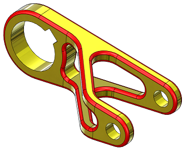
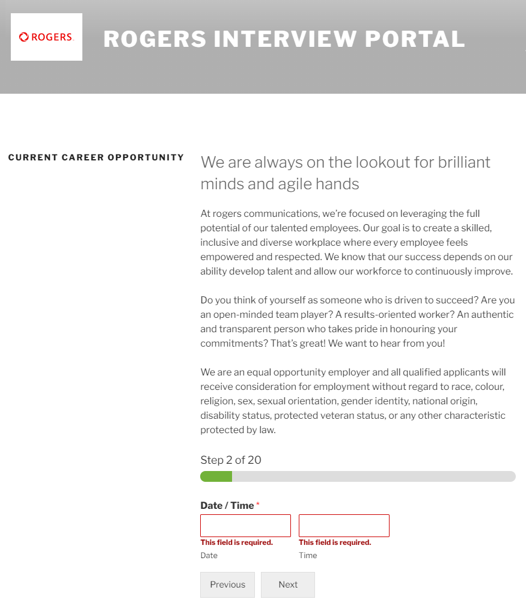
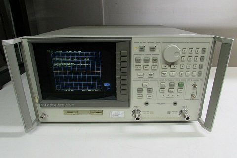

Journal
Identiconn
March 13, 2023
The Identiconn page is the first tool I've seen that can help you identify a header's part number. I'll probably use it backwards to find headers for future projects when JST VH won't work.
Freewrite
January 24, 2022
Some years ago during university I read a comment online from an author talking about the type of computer they wanted. It would be stripped of most of its functionality, containing only a bare bones text editor. No internet access. No email. No games. A distraction free environment to help them get work done. Unfortunately, they claimed that every technical person they talked to thought it was a terrible idea, that there would be no demand for such a limited computer. I couldn't believe they had been rejected so broadly since it seemed like such a common sense idea, so I talked to some of the other engineers in my classes about it. To my surprise, they also all thought it wasn't viable. In some ways it doesn't make sense. Why would someone pay 50% of the price of a regular computer to get 10% of the functionality?
Years passed and I didn't really think about it until I ran across Freewrite. It's exactly what the author wanted all those years ago. I wonder if they know about it?
Model Mania
December 14, 2021

Model Mania is an event at the annual Solidworks conference where people
try to 3D model a part from a 2D drawing.
They're then given another drawing of the same part with a few changes to implement.
Since the entire process is timed it's a good measure of how fast you can model
unusual shapes and how flexible your model is.
They've posted all the previous challenges
here.
Since they always make the part a bit unusal it's interesting to look through them to see what's possible.
Fake Job Offer
October 7, 2021
I recieved a fake job offer this week. It started with an email:
Subject:Rogers Communications is Interested in your Services
From: hire@jobs-rogers.online
Dear Mr/Mrs ADAM GULYAS,
In regards to your profile on Angel.co, the management of Rogers Communications is pleased to
inform you that your resume has been reviewed and we believe with your acquired skills, you
will be a good candidate for consideration in the competition for the position of a Hardware Engineer.
So therefore, if you are interested and will be available for an interview, kindly complete your
online self interview on our career portal using the link below:
Copy and paste the link below on your browser:
rogers-jobs.com
Scroll down to Current Career Opportunities. Afterwards complete your online self interview
with your unique application reference number “RHE/19101"
Due to the ongoing COVID-19 PANDEMIC all interviews and training process will be scheduled online.
Start Up Salary: $30-48/H
Paid Training is Available. Medical, Dental and 401(k)
The opportunity to have a high impact on the company, and hopefully on the world.
Upon completion, you would get an email from one of our human resource agents with an update
on your job application status after all the interviews have been processed within the next 24 hours.
I wish you the best of luck with the Interview and we look forward to having you on the team.
Best regards,
Alex Carroll
Hiring Manager
Rogers Communications
Wanting to see how far this would go, I went to the "career portal". There were no job descriptions, but there was a generic form that asked several standard interview questions.
I filled it out with fake information and very quickly received another email:
Subject: Re: Offer of Employment (Hardware Engineer)
From: hr@careers-rogers.com
Dear Mr/Ms.Adam Gulyas.
On behalf of the management of Rogers Communications Inc, this is a follow up on your
recently completed job interview process for the hardware engineer (remote) position.
I am pleased to inform you that after reviewing and processing of all conducted interviews,
the management sees you fit to occupy the position of a " Hardware Engineer " and you
will be required to work from a remote / home office which will be set up for you by the
management of Rogers Communications Inc, after you have accepted and signed your contract
of employment document.
You scored (84%) on the questions answered and for your consideration stand. Congratulations,
the company has decided to give you a chance to work for the company and would like to see
your diligence, charisma, commitment to this job and be a productive employee.
You are to start work immediately due to the rate of clients we have at hand.
So therefore, kindly find the attached PDF documents, containing your contract of employment.
Kindly note that it’s important to take the time to carefully evaluate the offer, so
you are making an informed and educated decision to accept the offer.
You are required to review, sign and return back compulsorily with
* Clear Front and back picture/scan of your government issued I.D card
* Proof of address document (Any utility bill, recent pay slip etc)
MORE INFORMATION:
*For standard benefits (medical, dental, vision, paid time off, rrsp) are only available after 28 days of job commencement.
Upon confirmation, you will be cleared for your home office set up and training process afterwards.
Also if you have any questions regarding your employment contract document, kindly reply to this email with your inquiries and I will be glad to assist you.
Regards,
Alex Carroll
H.O.D. (Human Resources)
Rogers Communications Inc.
At this point I stopped (because I didn't want to forge a drivers license) and never heard back from them.
I did find an Alex Carroll on LinkedIn who works for Rogers, and warned him his name was being used. He confirmed
that this was indeed a scam.
Inkscape Schematic Symbols
October 2, 2021
If you're drawing electrical schematics in Inkscape and don't want to start from scratch, pre-drawn symbols are available on Wikipedia: Generic Symbols. IEC Symbols.
HORG
July 28, 2021
I've become aware of HORG (the Holotypic Occlupanid Research Group), a website devoted to the taxonomical classification of the little plastic tabs that keep bread bags closed. It will appeal to anyone who enjoys systems that are both arbitrary and self consistent.
Original I2S Specification
June 24, 2021
The first specification for the inter-IC sound (I2S) bus was published by Philips in 1986. I looked it up because I needed to know exactly how the master of the bus was determined. It turns out the master is always the device supplying the serial and word select clocks, even if it’s not supplying the actual audio data. One surprising thing is that it makes no mention of MCLK, a signal that is often included to give devices extra clock cycles to do multiple things for every bit of audio data. Since the spec is no longer hosted by Philips, I found it in the Internet Archive and have reposted it here for posterity. I2S Standard.
Web Badges
June 6, 2021
Web Badge World is a website trying to preserve web badges, those little 80x15 images that were very common a few decades ago. Looking through it was kind of surreal. I hadn't realized I wasn't seeing them around anymore and had forgotten about them. If you want to make a web badge, here's the standard dimensions.
WireViz: Cable Documentation Program
May 11, 2021
I found out about WireViz today. It's the first program I've found for cable documentation, and it looks pretty straight forward. The input is a text file and the output is an easy to understand image. Click the link for examples.
Saving Data From An Old HP VNA
December 12, 2020
At a previous job we had on old vector network analyzer, the HP 8753D.
HP 8753-D (picture from ebay)
It was fairly old, but like most old RF equipment it was built to last. (Although I think there's some selection bias in that statement.) We used it for trimming the length of antennas until they were resonant in the 2.4 GHz ISM band. In other words, "make the antenna shorter until the S11 valley was centred at 2.44 GHz". The final length was recorded and the antenna design was changed in the next PCB release.
Unfortunately the VNA was so old that it didn't have a USB port or any other easy way to save data. An antenna would be tuned, but the only data that was saved was the final antenna length. Things like resonant frequency, bandwidth, or input impedance were lost.
What the VNA did have was a floppy disk drive. I found some floppy disks burried in storage and borrowed our greybeard tech's USB floppy disk reader. The VNA was meant to output to a plotter, a device that's basically a CNC machine holding a pen. Here's a video showing one in action. This meant that the VNA could output HPGL (Hewlett-Packard Graphics Language) files to the floppy disk. HPGL is kind of interesting because it's pretty human readable. The commands are all abbreviations of their names, unlike G-code. Here's a handy reference guide.
So with the floppy reader I was able to get plotter output from the VNA onto my computer. But how to render it? I tried a few different programs, both installed and online, and the most useful one was HP-GL Viewer, which is maintained by CERN. After tweaking the output a bit I was able to print to PDF and then convert to an image. The end result is shown below. Markers are used to record important numerical values.

This method produces plots that are the same size, so you can flip through a folder of them in an image viewer and the plot axis won't move. This makes it easy to compare different outputs.
One cool thing about the HPGL output is that the section of code that draws the data line is a series of goto commands for the pen. It's a bunch of x,y coordinates that can easily be cleaned up in a spreadsheet, then input into a plotting program like Graph. The data is in "plotter units" instead of frequency and dB, but you can use the marker values to scale it if you want. Although if you're going to go to all that effort, you'll probably just want to poke around the VNA until you find the export data command.
An Old Joke
November 3, 2020
A horse walks into a bar. The bartender says "Why the long face?" The horse says "I've just realized I'm a metaphysical concept within a fictional narrative, and will cease to exist at the end of this sentence."
Bit Specific Addressing
October 15, 2020
The standard way to write to a microcontroller's GPIO output is to perform a read-modify-write operation on the port's data register. It's necessary to use a mask to modify the read value to ensure that the state of any non-target GPIO isn't inadvertantly changed. The downside of this method is that it ties up the bus for several clock cycles. Ideally you would be able to write directly to specific bits in the register individually and only preform one operation instead of three.
This problem can be solved using set-only and reset-only registers, but there is another way called "bit specific addressing" that the TM4C uses. The address itself is used as a mask. A base address is defined for each port, and then specific bits are set for each GPIO you want to be able to affect. For example, the base address for port A is 0x40004000. In order to set PA0 high without affecting the other port A pins, you would write 0x1 to address 0x40004004. To set PA2 you write 0x4 to 0x40004010. Since specific address bits are assigned to each GPIO, you can combine them. In order to set PA0 and PA2 at the same time, you would write 0x5 to 0x40004014.
This method does require 256 addresses for each port in order to write to each combination of port pins, but in a system with billions of addresses this isn't too large of a cost.
For more information, see Section 10.2.1.2 of the TM4C123GH6PM datasheet.
October 12, 2020
My favorite email I've received was from a client. It reads as follows:
I'M AVAILABLE, BUT THIS MEETING ONLY MAKES SENSE IF (nAME) IS ALSO. XCUSE CAPS.. TOO LAZY TO RETYPE
I like how when he realized his mistake, he didn't turn caps lock off but instead fully committed.
Buck Converter Theory
October 8, 2020
A friend linked me to a really good website for buck converters theory: On My PhD. There's a bunch of other EE topics as well.
Moog Transistor Ladder Analysis
October 3, 2020
I found what looks like a rigorous analysis of the transistor ladder filter by Timothy E. Stinchcombe. It will be useful when I make a VCF for my synth.
Feedback on the KiCad Page Layout Editor
October 2, 2020
I no longer have access to Altium through work, so I'm learning KiCad (v5.1.6). I just made a custom title block and found the interface was awkward. However, given how rare it is to make a new title block, all the things mentioned here are probably low priority.
To place a line, I have to go into a menu to select "place a line", then type in the end point coordinates. The coordinate fields are in the order: Y start, X start, X end, Y end. It would be easier if X was always first. These values are only important in a relative sense because after clicking OK it takes me to the main screen where I can move the line around with the mouse. Why not just let me optionally specify a length or width?
After the line was placed, there was an error with the coordinates. I would place something at (50,75) and it would show in the properties window as something like (50.007,75.003). Not a big deal, but why is this even a thing?
If I want to place a line, there should be either a toolbar button or a hotkey listed in the Place menu. To actually place the line, I should be able to click two places on the screen to place the line end points.
It's hard to move line end points once they exist. I can't drag individual end points and have to instead edit the coordinate fields manually (which are thankfully in a sensible order).
The default move command seems to be to drag to select the thing you want to move. There was a case where I wanted to move two text objects, but not the line between them. I had to move the line as well then move it back because there's no concept of shift clicking to select multiple things.
There's also no way to have nothing selected. This isn't an actual issue, just a bit annoying.
In the design panel, it lists all the entities (like lines, text, ect.). However, it just lists them by "text11:Text" or "segm8:Line" I have to click through each one if I want to find something. I also can't drag them to change the order or sort by entity type. It would be nice if, at least for text, it listed the first few characters in the text string.
You can only select already existing lines by clicking on the endpoint, not anywhere on the line. if two lines have the same end point, a window pops up asking which one of the two you want, but the names you have to select from aren't helpful. I have no idea if the line I want is line 11 or 15.
One neat feature is that you can select the origin location for line end point coordinates, so you can have the bottom left be (0,0) if you want (as opposed to the KiCad standard upper left).
Each line also has an intrinsic repeat/patterning option, which was something of a saving grace.
The process of saving a template file and loading it into a schematic was very intuitive. However, I made a change to the template, saved it, and tried to reload it into the schematic, which didn't change. I'm guessing it saw that the file path didn't change, so it didn't reload the template.
SnapEDA Plugins for ECAD
October 1, 2020
SnapEDA just sent me a newsletter about their (beta) plugins for Altium and KiCAD. I haven't tried them yet, but they sound like they could be really useful for easily importing 3D models.
Mechanical Parts from Haizol
September 8, 2020
I recently became aware of Haizol. It's a website that lets you upload mechanical designs for multiple factories in China to bid on. Most production processes are covered. They do seem to have minimum order quantities since most of the RFQs are for thousands of parts, but I did see a few that were for a couple hundred. I guess it depends on what factories are willing to bid on.
Electrostatic Force Field
July 26, 2020
I came across this interesting account of an "Invisible Electrostatic Wall". Apparently a tape factory built up so much static charge from unrolling giant tape reels that it stopped workers from walking under the tape.
Electric Machine Theory
May 31, 2020
Dr. Andy Knight maintains a website that covers electric machines. It's pretty rigorous.
Electron Microscope Animations
February 23, 2020
I'm always impressed with what Ben from Applied Science is able to do. In this video he uses an electron microscope to make animations of carbon nanotubes.